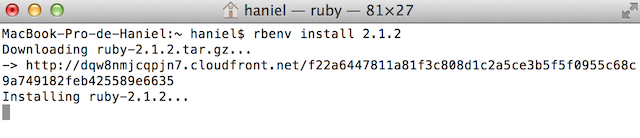

Lo primero que debemos tener es brew, escribiendo "ruby -e "$(curl -fsSL https://raw.github.com/Homebrew/homebrew/go/install)"" lo instalaremos.
Luego instalamos rbenv : "brew install rbenv ruby-build"
instalacionruby" title="Title" />
versionruby" title="Title" />
Para la instalacion de la gema de tweeter solamente es necesario introducir: "gem install tweeter" y para sinatra: "gem install sinatra".
En el directorio rsa encontraremos la clave id_rsa.pub, sino la tuvieramos tendriamos que generar un par de claves de publicas usando el comando: ”ssh-keygen”.
Esta clave la copiamos y la introducimos en Github en ajustes -> SSH Keys
La configuracion personal de nuestra cuenta sera como la de la imagen siguiente.

Para asegurarnos de una configuracion correcta ejecutaremos: "git config --list"
comprobarconfiguracion" title="Title" />